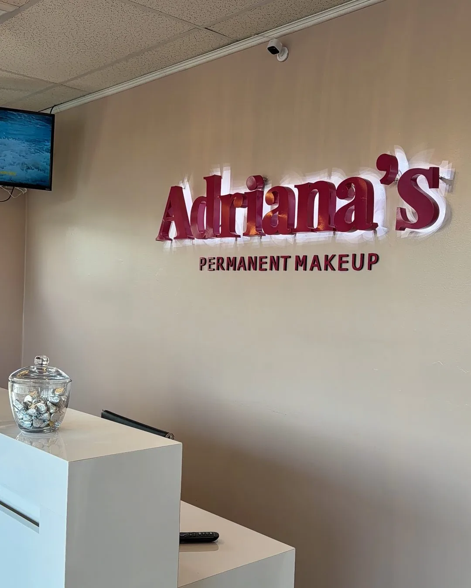
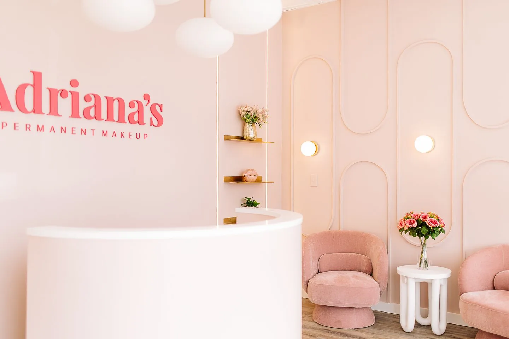

Adriana's Permanent Makeup Locations: Wilmington MA, Salem NH & Peabody MA
Adriana's Permanent Makeup has two client studios, Wilmington, MA and Salem, NH, plus a students-only academy in Peabody, MA. Both studios share the same price list and lead artist, so the honest reasons to pick one are distance, availability, and which state's rules apply.
Where Are Adriana’s Permanent Makeup Studios and Academy?
Adriana’s Permanent Makeup operates two client-facing studios in New England, Wilmington, Massachusetts and Salem, New Hampshire, both offering the full range of brow, lip and eyeliner permanent makeup. Training happens separately, at Adriana’s Academy in Peabody, Massachusetts, where students, not clients, are served.
How Do the Three Addresses Compare?
Adriana's Permanent Makeup has three addresses, but only two take client appointments: Wilmington, MA and Salem, NH. Peabody, MA is Adriana's Academy, reserved for students in training, with no client procedures performed there at all.
| Address | What happens there | Who it's for | Phone | Hours | Nearest highway | Rail |
|---|---|---|---|---|---|---|
| Wilmington, MA 211 Lowell St, Suite F | Client procedures, one private suite | Brow/lip/eyeliner clients | (781) 853-8063 | Mon–Sat 10a–6p | I-93 & Rte 129 | 2 MBTA stations |
| Salem, NH 117A Main St | Client procedures, curtained stations | Brow/lip/eyeliner clients | (978) 223-7496 | Mon–Sat 10a–6p | I-93 Exit 2 | None, no NH rail |
| Peabody, MA 39 Cross St, Suite 206 | Student training only | Enrolled students | (781) 853-8063 | By class schedule | Rte 114/128, Exit 40 | Flat price |
Both client studios share one menu and one price list, $250 to $850, with the perfecting touch-up included 6 to 8 weeks later either way.
What Should I Know About the Wilmington, MA Studio?
The Wilmington, MA studio occupies a private suite at 211 Lowell Street, Suite F, directly on Massachusetts Route 129, near the I-93/Route 129 interchange. It is a single closed room, not a chair inside a larger salon, and Wilmington's population is 23,336.
Master Permanent Makeup Artist Adriana Souza Santos and second licensed artist Livian Camargo Gomes both work from this location, under Wilmington Board of Health licenses 20261921 (facility), 20261923 (Adriana, practitioner) and 20261924 (Livian, practitioner), both valid through 31 December 2026.
Two MBTA commuter rail stations serve the town, Wilmington on the Lowell Line and North Wilmington on the Haverhill Line, an option Salem, NH does not have.

See the full Wilmington, MA studio page for hours, pricing, and directions from nearby towns.
What Should I Know About the Salem, NH Studio?
The Salem, NH studio is at 117A Main Street, on NH Route 97, in the Salem Depot area, with the nearest I-93 access at Exit 2, Pelham Road. Unlike Wilmington, the space has several curtained treatment stations rather than one room, and Salem's population is 30,964.
Because Salem runs multiple stations, it can often take an appointment when the single Wilmington suite is already booked. Adriana Souza Santos also consults here, holding New Hampshire state Body Artist license 4283 (valid through 18 July 2028, verifiable at forms.nh.gov/licenseverification) plus Town of Salem licenses BODA-10 and BODE-4, both through 28 February 2027.
Salem has no passenger rail station, so nearby Massachusetts clients drive rather than take a train.

See the full Salem, NH studio page for hours, pricing, and directions from nearby towns.
Can I Book an Appointment at the Peabody, MA Academy?
No. Adriana's Academy at 39 Cross Street, Suite 206, Peabody, MA 01960 trains permanent makeup students and performs no client procedures at all. Anyone looking to book a brow, lip, or eyeliner appointment should go to the Wilmington, MA or Salem, NH studio instead, not Peabody.
The academy sits at the Route 114/Route 128 junction, Exit 40, across from the Northshore Mall, in a city of 54,695 people, training new artists under Adriana Souza Santos, an AAM Diamond Certified Trainer with 300+ students trained.
Nobody should drive to Adriana's Academy expecting a consultation. Client bookings only happen through Wilmington, MA or Salem, NH.
Which Studio Should I Choose, Wilmington or Salem?
Wilmington, MA and Salem, NH offer the identical service menu at the identical prices, so the honest deciding factors are distance from home, which studio has availability on the date you want, and which state's licensing rules you prefer to verify. Neither studio is a "better" version of the other.
Distance usually decides it first: Route 129 clients save a drive by choosing Wilmington; clients near NH Route 97 or north of Methuen are closer to Salem. Availability is the second factor, Salem's multiple curtained stations can take an extra appointment when Wilmington's single suite is fully booked.
The third factor is regulatory: Massachusetts leaves body art licensing to each town's Board of Health, while New Hampshire licenses practitioners at the state level under RSA 314-A, verifiable at forms.nh.gov/licenseverification.
Livian Camargo Gomes, the second licensed artist, works only from Wilmington. Confirm an artist preference by studio before booking.
Which Towns Does Each Studio Serve?
Wilmington draws from seven towns within about 11 miles, led by Reading at 2.7 miles; Salem draws from six towns within about 11 miles, led by Methuen at 4.5 miles. Distances are driving distance, not drive time, since traffic varies.
| Nearest studio | Town | Driving distance |
|---|---|---|
| Wilmington, MA | Reading, MA | 2.7 mi |
| Woburn, MA | 4.7 mi | |
| Burlington, MA | 5.0 mi | |
| North Reading, MA | 6.1 mi | |
| Tewksbury, MA | 7.2 mi | |
| Billerica, MA | 8.1 mi | |
| Andover, MA | 10.6 mi | |
| Salem, NH | Methuen, MA | 4.5 mi |
| Windham, NH | 5.3 mi | |
| Pelham, NH | 6.8 mi | |
| Haverhill, MA | 8.4 mi | |
| North Andover, MA | 8.7 mi | |
| Derry, NH | 10.5 mi |
Ready to Book Your Permanent Makeup?
See real-time availability for the Wilmington MA and Salem NH studios, or send your question and we answer with the honest options for your features. We answer in English and in Portuguese.
Book Online Now Ask a Question FirstFrequently Asked Questions
Either Wilmington, MA or Salem, NH. They offer the same 13 services at the same prices. Pick by distance and by phone number: Wilmington is 211 Lowell Street, Suite F, (781) 853-8063; Salem is 117A Main Street, (978) 223-7496. The Peabody address is the academy and treats no clients.
Because it is the training division. Adriana’s Academy at 39 Cross Street, Suite 206, Peabody, MA serves students only, the 100-hour course, the apprenticeship and the VIP Masterclass are taught there. No client procedures happen at that address, so never book a brow or lip appointment for Peabody.
Yes. The same 13 services are published at the same prices at both, from $250 to $850, and every original price includes the perfecting session 6 to 8 weeks later. What differs between them is the phone number and the licensing regime, not the price list.
Yes, and that is worth knowing. Massachusetts has no single state body art licence: each town’s Board of Health licenses separately, which is why Wilmington issues its own numbers. New Hampshire licenses at state level under RSA 314-A, and the Town of Salem licenses on top of that.
Both studios are open Monday to Saturday, 10:00 a.m. to 6:00 p.m., and closed on Sunday. Booking runs through Fresha for real-time availability, or by phone at the number of the studio you want: (781) 853-8063 for Wilmington, (978) 223-7496 for Salem.